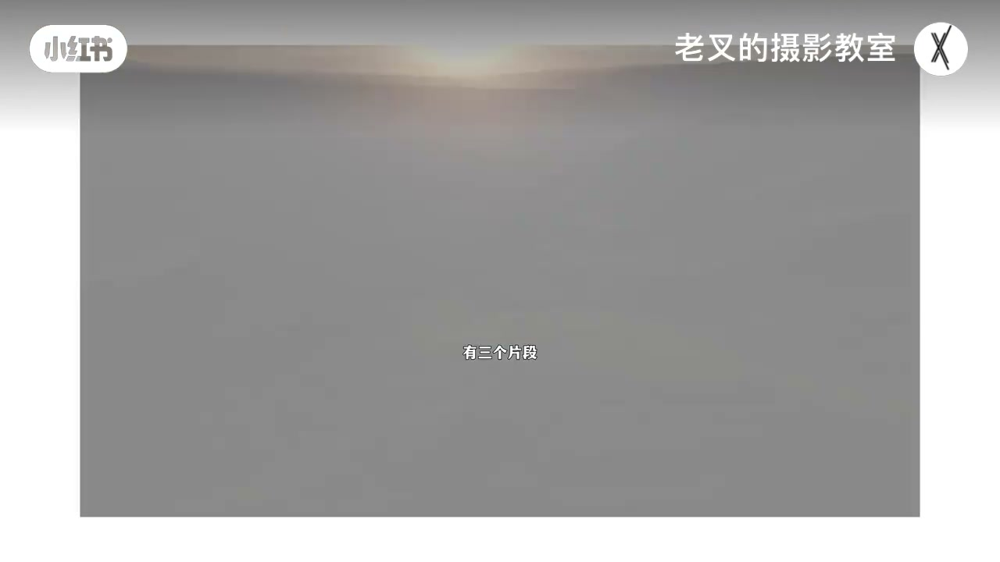
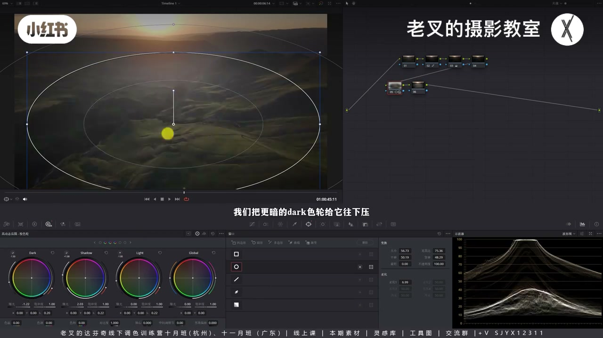
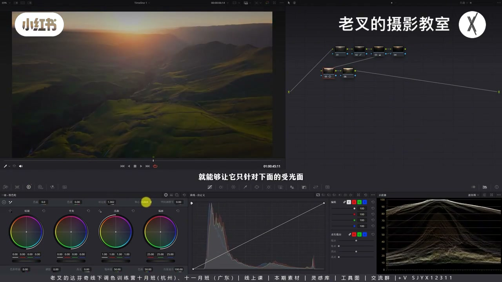
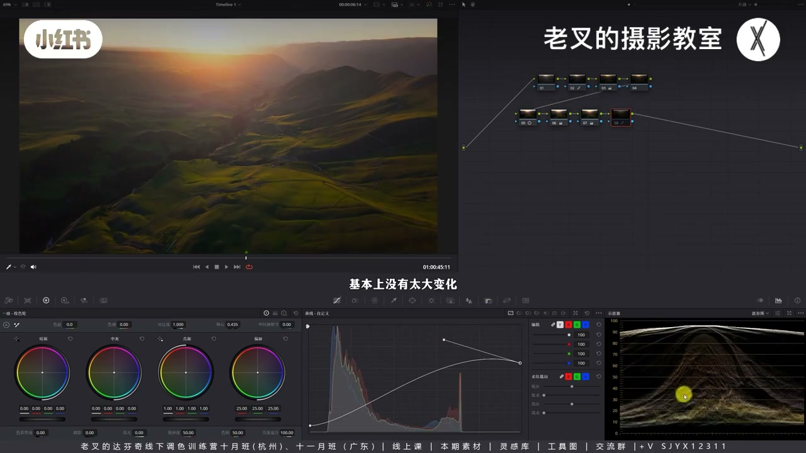
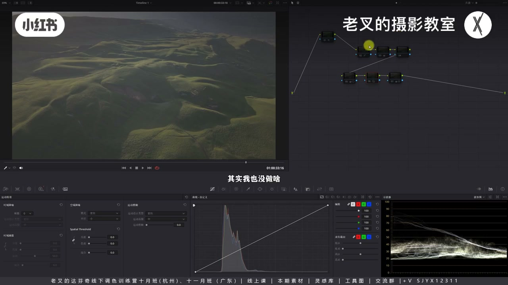
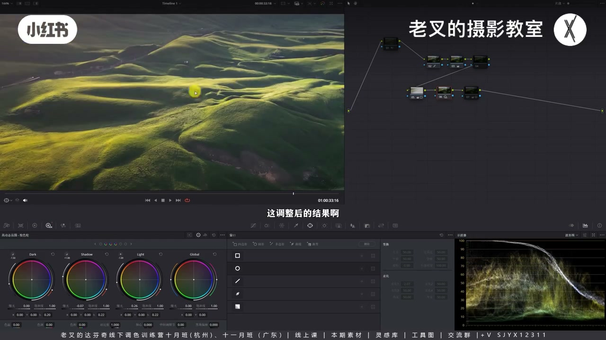

内容要点
大光比航拍地面太暗、强行提亮噪点爆炸：先曲线压暗部去灰再还原，再对地面受光面局部展层次（HDR 的 Shadow 抬 + Dark 压，或对比度+轴心），过曝太阳可牺牲。提亮本质是「提受光面、压更暗面」，噪点区变少；第二镜则敢把已无细节的天空拉过曝，再渐变强化光向、HDR 展地面层次。
知识结构
大光比地面暗；全局曲线/阴影提亮皆发灰。
遮罩受光面；Shadow 抬+Dark 压，或对比度+轴心左移。
无细节高光可不拉回；影调到位后再微提阴影。
样条线压刺眼天空；提亮兼压暗→噪点区减少。
敢拉过曝天空；渐变光向+HDR 展地面；颜色可选。
大光比不是全局猛提暗部，而是先去灰、再在暗面内局部拉开受光/背光；过曝无细节区可牺牲。提亮同时压暗更多面积，噪点反而可控。
00:00-01:18诉求：地面提上来却不能噪点炸
上一期记错问题：核心是光比过大、地面太暗、后期展不开，强行提亮暗部噪点过多。作者结果满意，但可更稳。全局曲线或阴影滑块提亮都会发灰——地面真实更暗，画面表现发灰。

01:18-03:21先去灰，再局部对受光面展对比
2 号节点曲线略压暗部去灰并微加饱和（D-Log M 还原）。逆光夕阳太阳在镜内，除太阳外很黑是自然；但地面有大片受光，波形约在 10%–30% 一带——要提的是这块受光面的上半，下半压或不动，类似局部加对比。
遮罩后 HDR：抬 Shadow、压 Dark，只让受光面亮；仍灰再加对比度。也可重置后直接加对比度并把轴心左移，只提下部受光面——轴心界定谁亮谁暗。

03:21-04:44过曝太阳可牺牲；影调后再微提阴影
太阳已无信息就不必花精力拉回，可当牺牲区；嫌刺眼可大柔化遮罩限制，非必须。因提的是本就较亮的受光面并压了更暗地面，不易发灰。还要整体亮暗部时，后节点微提阴影滑块即可——影调已到位。

04:44-06:09柔和对比度压天空刺眼；噪点逻辑
颜色可略暖对冲远景蓝紫，可做可不做。柔和对比度：可编辑样条线降高光端、抬高光波谷，暗部端上提、暗部波谷下降——天空变「灰」不刺眼且反差不大变。一按高光易断层，柔和对比更安全。
原本约 15% 亮度区调后可到 10% 以下：本质提亮也压暗，噪点区变少；略降噪即可。

06:09-08:35第二镜：敢拉过曝 + 渐变光向
第二镜闷在高光层次没拉开：对已无细节的小块天空敢再拉过曝，往往已好八成。再从太阳方向拉渐变强化光向，HDR 抬 Highlight、小幅抬 Light、微降 Shadow 展地面受光。远景蓝太重可色温暖化并对冲红紫偏黄。第三段自行练；素材作者同意分享。


完整转录（337段）
以下文本由 Whisper medium 模型自动转录，可能存在少量识别误差，已尽可能修正。
上一期视频不是说解决一位朋友的问题吗
后来那位朋友给我发了私信
我才发现问题记错了
他的核心诉求是处理高光问题
前期拍的这个光比太大了
地面太暗
后期拉不开层次
如果想要强行体谅
又会让暗部出现太多噪点
有三个片段
我挑选两个来看
这是他的结果
我大概调了一下
这是我的结果
能够在一定程度上解决这个问题
调色结果
作者也是非常好
但是我认为
这个结果
我认为是因为
调色结果
作者也是非常满意的
如果你也遇到了
类似的大光比的航拍问题的话
那么这一期应该对你有帮助
我们看到画面
作者一定是希望
把地面的光给它提上来的
但是我们可以看一下
不论我们用任何的方式
都无法去做全局的调整
比如说我用曲线
不行它会发灰
如果我又提高了是阴影滑块
它也发灰
怎么提它都是发灰的
这个时候我们要先解决一个问题
这个画面的地面虽然偏暗
我们看到波线图
它已经在10%左右
但是它是发灰的
因为这个地面的真实情况
要远暗于我们这个画面的表现情况
所以我们可以用曲线
先在2号节点
给它的暗部往下走一点点
给它解决掉发灰的问题
然后再给它加一点点饱和度
其实也就是在还原灰片的一个过程
只不过它这个是D-Log M
它不是那么灰
它的宽容度也没有那么大
解决好发灰的问题了
我们就再来看波星图
大光比的逆光夕阳素材
太阳又在镜头内
所以除了太阳以外
其他的物体它就是很黑的
这是自然现象
但是我们仔细看画面
地面其实是有大面积被照亮的
这些地方都是有被照亮的
所以我们真正要调整的是
地面这一处的受光面
从波星图上来看
差不多是中间这个区域
稍微高一点点
在这一块位置
10%到30%之间差不多
所以我们要保证的是
这一块区域的内容往上走
让它亮一点
但同时我们又不能牺牲掉暗暗部
否则它会发灰
因此我们就得到了一个答案
我们要局部调整
怎么来
我们可以先给这一块的位置
画一个遮罩
然后假设这一块位置
它在波星图上
我们刚刚不是看到吗
是在10%到30%之间
我们把它看作一个整体
我们的目的是让这一个区域
它的上半部分往上走
下半部分往下走
或者保持不变
这个是不是就是类似于
增加对比度的行为
让亮的更亮暗的更暗
我们先用HDR色轮来操作一下
打开HDR色轮
我们在提高Shadow色轮的时候
它的上半部分是不是往上走了
对吧 往上走
但是光体亮还不行
会出现刚刚说的发灰的问题
我们还得压暗
所以我们把更暗的Dark色轮给它往下压
此时我们看到
是不是只有受光面
我们保护度再高一点点吧
是不是只有受光面在提亮了
这就是在局部强化了对比度
它开始亮了
但它不好看
它太灰了
所以我们还得再给它增加对比度
来解决它发灰的问题
这个时候你会不会有一个疑问
为什么我们不直接用对比度来调整
没错 当然可以的
我们把5号节点给它重置了
然后给画面增加一点对比度
然后配合轴心
我们把轴心往左边移
这样就能够让它只针对
下面的受光面给它提亮了
看到没有
这样的效果其实也是非常非常好的
轴心的作用就是去界定
增加对比度之后
哪些面是亮面
哪些面是暗面
具体的你可以点我主页
去看看轴心那期视频
这样一条地面就亮起来了
然后有一个核心的观点
我要讲在前面
过曝的天空
我们要不要花精力把它拉回来
我的结论是不用拉
因为你拉不回来
在原片我们看到
太阳就已经是完全失去了信息
既然没有信息没有细节
那就让它成为可以被牺牲的区域
我们让画面真的变亮
导致太阳变得更亮
这件事情有没有问题
其实没有很大的问题
当然你如果不希望太阳这么亮
你可以画折罩
我们把这个限制
在中间这个区域把柔化开大
这样的行为当然可以
但是我觉得没有特别大的必要
太阳亮一点问题也不是很大
我就把这个制造给它删了
而且又因为我们提亮地面的方式
是提亮本就亮一点的受光面
同时我们还压暗了暗一点的地面
所以我们这样的提亮
它不会让画面发灰
同样的如果说你想让画面整体再亮一点
指的是它的暗部
那么此时你就可以在后面更一个节点
稍微给它提高一点点阴影滑块
这样的提亮它就不会发灰了
为什么呀
因为我们前面在5号节点
把影调给它做到位了
让亮的足够亮 暗的足够暗
这样在正确的影调基础上
稍微给它提亮点阴影滑块
画面就不会有特别大的牺牲
不用提亮这么多
稍微提亮一点点
然后你说颜色要不要调
我是觉得完全随你
你如果想暖一点的话
你可以来个节点
稍微给它用色温往暖的方向走一点点
对冲掉远处的这里有一点点的蓝紫色
让你的画面颜色更干净一点
少一点
当然我觉得这个可做可不做了
如果你觉得现在就挺好
那就不用动
最后我们依旧可以来一个柔和对比度
为什么要做这个
就是为了天空不要太刺眼
它可以亮
但它不要太刺眼 太抢戏了
如果我们调到这一步了
你还是觉得天空太亮了
此时你会发现
如果我们用一按高光的方式
它容易压断层 对吧
这也是经常会遇到的一个情况
那么这个时候
柔和对比度就会相对安全了
我们可以打开曲线右上角的
可编辑的烟条线这个选项
然后把高光这一端往下降
然后再把高光延伸出来的波感
给它往上提
让它的高光恢复到
原本该有的一个位置
然后把暗部这一端往上提
再把暗部这一端延伸出来的波感
给它往下降
让整个画面的反差
不要有太大的变化
你看下面基本上没有太大的变化
但是我们放大看画面
这是调整前的
这一侧非常非常亮
这是调整后的
它变灰了
就是这么简单
这也是我们想要的一个核心目的
而且你用柔和对比度
它做起来会非常快
是不是还可以
效果还挺好的
而且我们这样提亮
因为我们不只是单纯的提亮
我们还压暗了非常多面积的内容
你看原本
原本的这一侧它的亮度
它是在15左右
我们看播信图
但是我们全部调整完了之后
它变到了10以下了
所以本质上我们不只是在提亮
我们还在压暗
所以它会出现噪点的区域就变少了
那么它的噪点也不会特别特别明显
当然你想让它稍微降点噪
问题也不是很大
稍微来一点点就行了
简单一做
这样一做就OK了
效果还挺好的
我们简单回顾一下
为什么大光比的画面提亮暗部会那么不自然
一方面你的暗面
有没有真实的一个受光照的条件
如果没有的话
你是提不亮的
这是个大前提
如果有的话
那么你就要把暗面做好分区
尽管暗面的曝光层次非常非常弱
也就是它的亮的不够亮
暗的不够暗
但它还是有亮面和暗面
所以我们要想尽一切办法
把这一块小的区域它的明暗层次给它拉开
就是这么简单的一个思路
然后我们看到第二个素材
这个素材问题就不是太大了
它光影情况还是不错的
曝光也还行
但是为什么那位朋友的效果
他会觉得有点发闷呢
就是因为它的高光层次没有拉开
亮的不够亮
其实如果你敢把已经过曝的东西拉过曝
你的问题就能解决80%
这句话是对这位作者说的
其实我也没做啥
我们可以看一下
我单单是还原
你看我看
你看我在二号节点
我把高光拉的是非常非常高的
我就是把左上角这里一块小小的天空
让它拉过曝了
因为它本来就已经过曝了
没有什么细节的
把它拉的再亮一点
到这一步
其实就已经比你原本调的那个效果要好了
对吧
那剩下的也没有额外的一些特别奇怪的一个操作
我在五号节点从左上
也就是太阳方向
往右下拉一个渐变遮罩
把光的方向给它强化了一下
因为原本亮的暗的这个变化不是很明显
然后呢
我再用HDR色轮
把地面的受光面它拉开一下层次
我们先看画面结果
这调整后的结果
这是原本的效果
当然这个你觉得你想不想要看你吧
我觉得如果你想要这样的一个效果
让它受光面更明显的话
它可以让你在把画面缩小了之后
看的会更有层次
怎么做呢
其实很简单
在HDR色轮中
我提高了highlight色轮的曝光
小幅提高了light色轮的曝光
轻微的降低了shadow色轮的曝光
就这么简单
最后这个颜色
看你需求吧
你想不想调
我个人是觉得远处这些蓝色的比重太大了
所以我在这里
我用色温让它往暖的方向调
对冲掉这个远处的蓝
然后把这个太阳这一侧
这一侧原本有点偏红偏紫的这个颜色
让它往黄的方向走一点
让你的颜色更加干净点
少一点
简单过一下
因为这一期视频
我感觉时间到这里也很长了
还有一个片段
那这个片段呢
我就不多讲了
大家可以素材领取过去
就是自己试一试
我也询问过作者
他也同意分享
大家如果有遇到类似的这个情况
你们可以用自己的素材去练
如果没有的话
也可以来我这里免费领取这三个素材
去感受一下这个思路
大家如果还有别的问题
也可以来找我
如果我觉得你这个问题具有普遍性的话
我就会做一期视频
那讲到这里
如果你觉得你有帮助的话
还希望多多三连
好了这期就到这里
886